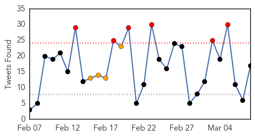

30 Day Trends
Web: 0 alerts, 0 warnings
Twitter: 6 alerts, 4 warnings
836 new deaths (9840 total)
1489 new cases (24014 total)
Top Articles:
- 1.000
- Last Ebola patient is released in Liberia Republican American
- 1.000
- Last Ebola patient is released in Liberia
- 0.999
- Antiseptic shows 99.9% efficacy against Ebola virus
- 0.999
- Despite reported decline, struggle against Ebola continues
- 0.999
- Did experimental vaccine shield doctor from Ebola?
- 0.998
- The Ebola Breakout Coincided with UN Vaccine Campaigns
- 0.994
- Preventing Ebola could be a scrub away!
- 0.993
- Liberia removes Ebola crematorium as outbreak is contained
- 0.983
- Why Is The VP Of Sierra Leone Running The Country By Laptop?
- 0.951
- Sierra Leone ruling APC party explains why it expelled vice president Sam Sumana
- 0.951
- Amendments in Juvenile Justice Act to remain
- 0.951
- Have a sense of purpose in life to protect heart
- 0.951
- Homeless Sierra Leone athlete held
- 0.951
- Two men detained over Nemtsov assassination in Moscow
- 0.928
- Correct Ebola ‘missteps’ to prevent future outbreaks
- 0.928
- International Women's Day: women as agents of change against Ebola
- 0.822
- WHO Begins Ebola Vaccine Trial in Guinea
- 0.676
- and a whole village was punished
- 0.580
- Masterton ebola nurse back home
- 0.525
- Delivering Vehicles to the Ebola Hot Zone
Top Tweets:
- 0.872
- Last Ebola Patient Leaves Hospital in Liberia - Town Hall http://t.co/MWFTSsLCjL ebola EVD
- 0.816
- Liberia removes Ebola crematorium after last patient is cured country's ... - U.S. News & World Report http://t.co/uP6PGCZQb0 ebola EVD
- 0.810
- Liberia Removes Ebola Crematorium as Outbreak Is Contained - ABC News http://t.co/UMb4vS747V ebola EVD
- 0.770
- RT: Women deserve highly subsidised healthcare in order to stop the spread of Ebola in Africa EbolaMNChat …
- 0.748
- Did experimental vaccine shield doctor from Ebola? - Futurity: Research News http://t.co/Dqig6GzHRe ebola EVD
- 0.720
- RT: Join & @EbolaAlert as we discuss How Ebola complicates Women's Health in W.Africa IWD…
- 0.701
- Sierra Leone athlete fleeing Ebola freed and given accomodation after public ... - The Independent http://t.co/fb3i6ZiLvU ebola EVD
- 0.701
- Sierra Leone athlete fleeing Ebola freed and given accomodation after public ... - The Independent http://t.co/1ZCdjRnzuO ebola EVD
- 0.649
- RT: Locking in Ebola: A specific calcium channel is required for Ebola virus to infect a cell http://t.co/tKFYWfXnfk htt…
- 0.633
- The 10079th Case: How Ebola Complicates Women's Health in West Africa EbolaMNCHat IWD2015 @wellbeingafrica http://t.co/idRXaaBr0k
- 0.585
- U.S. Army Pfc. Gilbertson put fears aside to help build Ebola treatment ... - Kearney Hub http://t.co/xPGGZeoszN ebola EVD
- 0.582
- Celebrating the woman who discovered Nigeria's Ebola patient zero and curbed ... - The Independent http://t.co/Eo2OeMHR3s ebola EVD
- 0.580
- Ebola Vaccine Given For Just Second Time; A 7th Person In Chicago Tested For ... - CBS Local http://t.co/N6hwOPzp9F ebola EVD
- 0.558
- With we commenced EbolaMNchat to delve deeper into how Ebola affected and is currently affecting Maternal & Child Health
- 0.553
- WHO health agency announces start of Ebola vaccine testing in worst-affected areas of Guinea http://t.co/oFd0P0Dm23
- 0.540
- Late Dr. Adadevoh a WOMAN SUSPECTED & REPORTED Nigeria's Ebola index case to Lagos State Epidemiologists. RESPECT & CELEBRATE
- 0.531
- EbolaMNchat while more women have been infected with Ebola the difference is not significant compared to men.
Web/News Articles

Tweets
Human Impact
Article Locations

Article Confidences